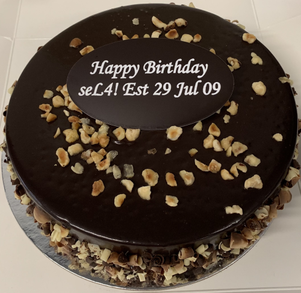

Happy seL4 Day everyone!
 On 29th July 2009, the original functional correctness proof of seL4 was completed, a widely-recognised research breakthrough and the first big milestone in seL4's history. We obviously had a party then, and have since celebrated its anniversary, calling it, tongue-in-cheek, “International Proof Day”.
On the fifth anniversary we open-sourced seL4, which was another major milestone, which we referred to as “seL4 Freedom Day”.
Today marks the 12th anniversary of the proof, and the 7th anniversary of open-sourcing, and from now on we'll refer to the date simply as "seL4 Day”.
The seL4 community is now definitely global. Still we would normally have a physical party in Sydney, but won't be able to due to the renewed Covid-19 restrictions — so we'll all be remote ;-)
Happy seL4 Day everyone!
A virtual toast to you all, and a big thank-you to all for your continued support!